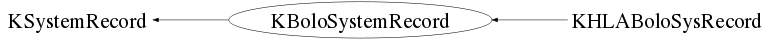

class KBoloSystemRecord: public KSystemRecord
KBoloSystemRecord.cxx KDataStructure Author: Adam Cox <mailto:adam.cox@ik.fzk.de> on 3/25/10. * Copyright 2010 Karlsruhe Institute of Technology. All rights reserved. This is base class for all Bolo System Records. It contains the run name, given as the first four alpha-numeric values of the run name from Samba. For example, kc21, is 2010, March 21st.
Function Members (Methods)
public:
| KBoloSystemRecord() | |
| KBoloSystemRecord(const KBoloSystemRecord& aSysRec) | |
| virtual | ~KBoloSystemRecord() |
| static TClass* | Class() |
| virtual void | Clear(Option_t* opt = "C") |
| virtual void | Compact() |
| Int_t | GetRunDay() const |
| Double_t | KSystemRecord::GetRunEndTime() const |
| Int_t | GetRunMonth() const |
| string | GetRunName() const |
| Double_t | KSystemRecord::GetRunStartTime() const |
| Int_t | GetRunYear() const |
| virtual TClass* | IsA() const |
| Bool_t | IsSame(const KBoloSystemRecord& aRec, Bool_t bPrint = false) const |
| Bool_t | KSystemRecord::IsSystemOn() const |
| Bool_t | operator!=(const KBoloSystemRecord& aRec) const |
| KBoloSystemRecord& | operator=(const KBoloSystemRecord& aSysRec) |
| Bool_t | operator==(const KBoloSystemRecord& aRec) const |
| void | KSystemRecord::SetIsSystemOn(Bool_t a) |
| void | KSystemRecord::SetRunEndTime(Double_t aNum) |
| void | SetRunName(string aWord) |
| void | KSystemRecord::SetRunStartTime(Double_t aNum) |
| virtual void | ShowMembers(TMemberInspector& insp, char* parent) |
| virtual void | Streamer(TBuffer& b) |
| void | StreamerNVirtual(TBuffer& b) |
private:
| void | CopyLocalMembers(const KBoloSystemRecord& aRec) |
| void | InitializeMembers() |
Class Charts
{kind=link}
{kind=link}
{kind=link}
{kind=link}

Function documentation
KBoloSystemRecord(const KBoloSystemRecord& aSysRec)
~KBoloSystemRecord(void)
KBoloSystemRecord(const KBoloSystemRecord& aSysRec)
KBoloSystemRecord& operator=(const KBoloSystemRecord& aSysRec)
void CopyLocalMembers(const KBoloSystemRecord& aRec)
Bool_t IsSame(const KBoloSystemRecord& aRec, Bool_t bPrint = false) const
void Compact(void)
make the event class as small as possible. this calls 'Compact' for all member variables that are KDS classes, member variables that can be compacted (such as TBits) and base classes